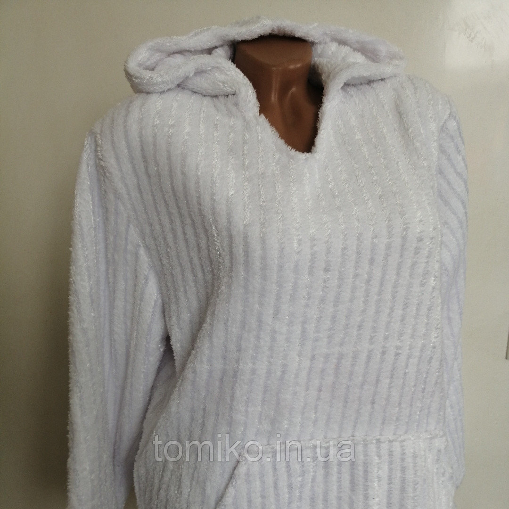
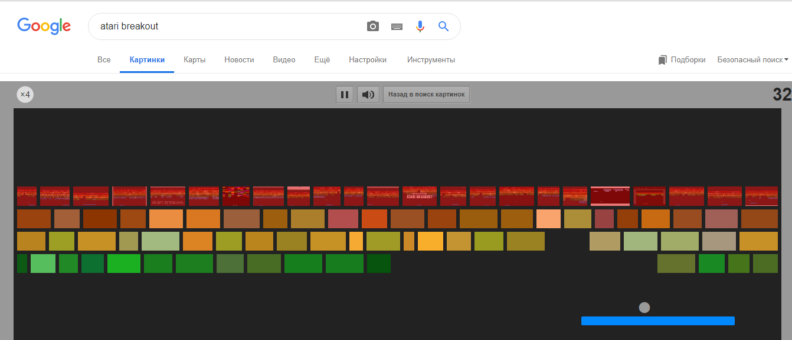
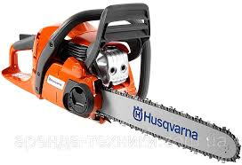
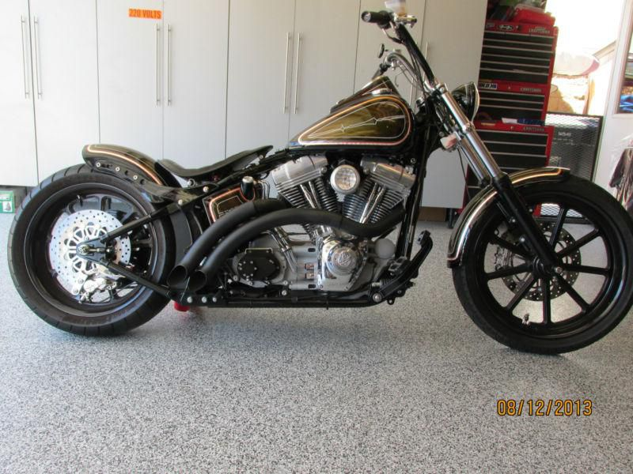

Тайное общество было учреждено бывшими солдатами-южанами после Гражданской войны (1861—1865). Преступлениям членов ку-клукс-клана обычно предшествовало предупреждение, посланное в причудливой, но широко известной форме. В некоторых частях страны это была дубовая ветка с листьями, в других — семена дыни или зёрнышки апельсина. Получив такое предупреждение, жертва могла либо отречься от своих прежних взглядов, либо покинуть страну. Если человек игнорировал предупреждение, его ждала смерть.


SHOW_OR_HIDE
Vodka is traditionally drunk "neat" or "straight" (not mixed with water, ice, or other mixer), though it is often served freezer chilled in the vodka belt countries of Belarus, Estonia, Finland, Iceland, Lithuania, Latvia, Norway, Poland, Russia, Sweden, and Ukraine. It is also used in cocktails and mixed drinks, such as the Vodka martini, Cosmopolitan, Vodka Tonic, Screwdriver, Greyhound, Black or White Russian, Moscow Mule, Bloody Mary, and Bloody Caesar.

